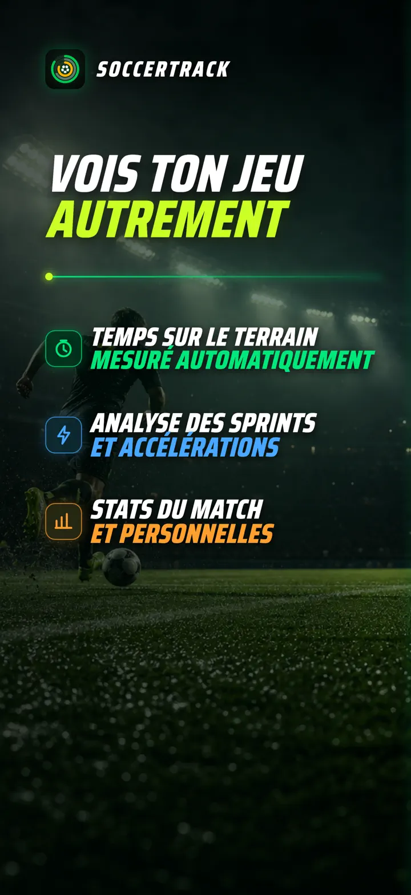
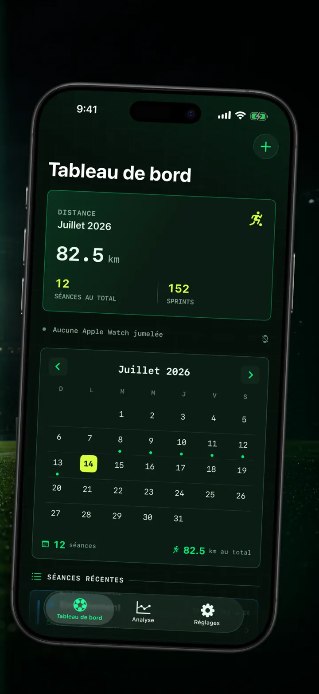
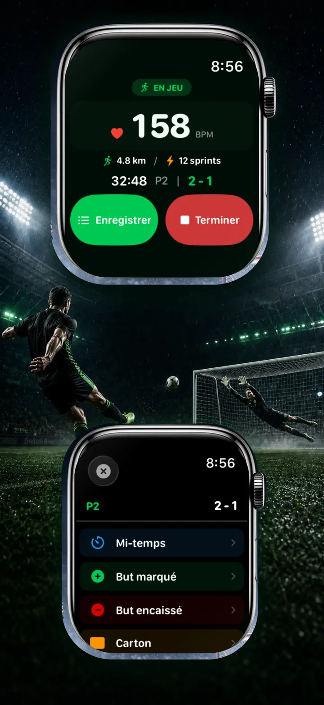
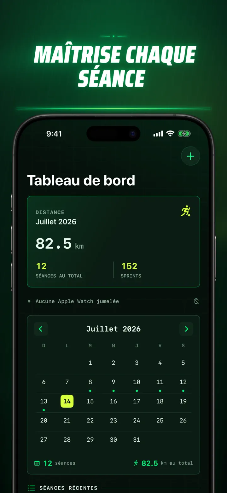
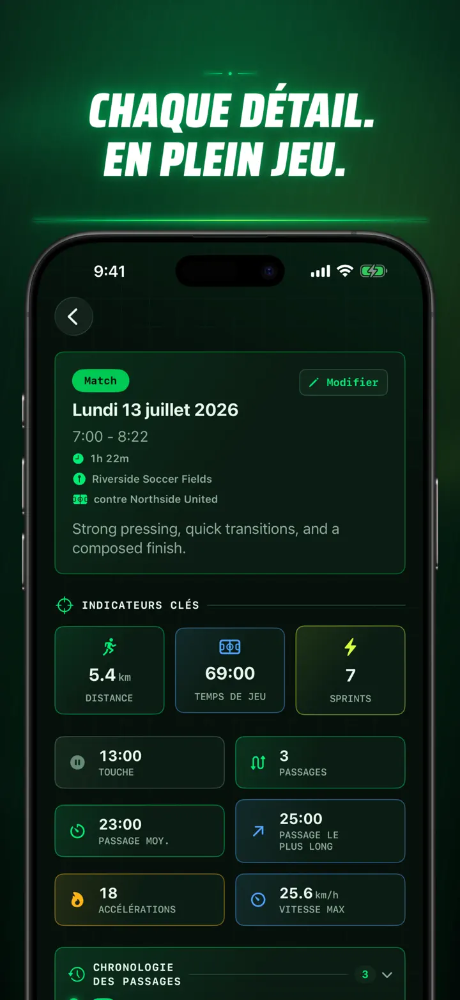
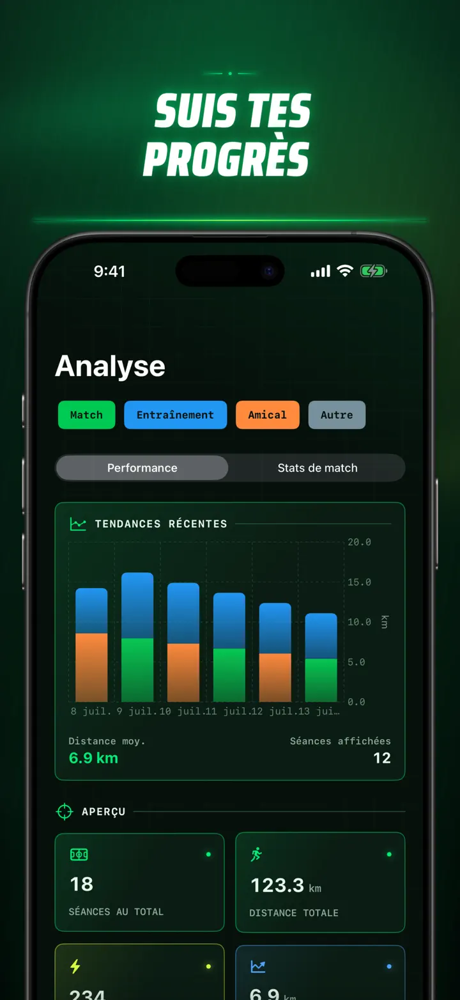
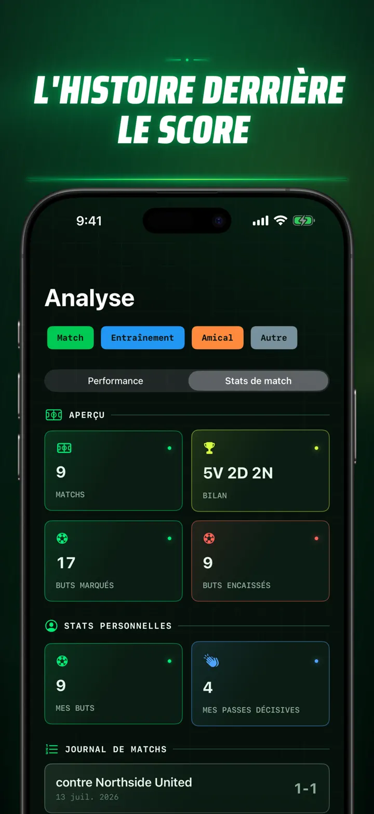
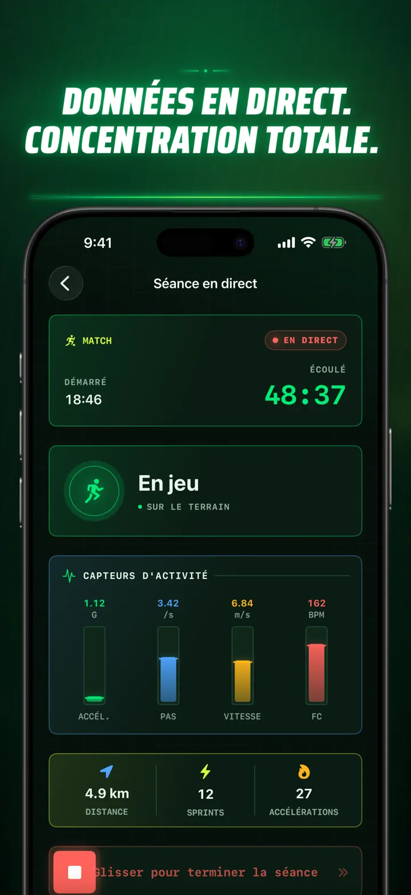
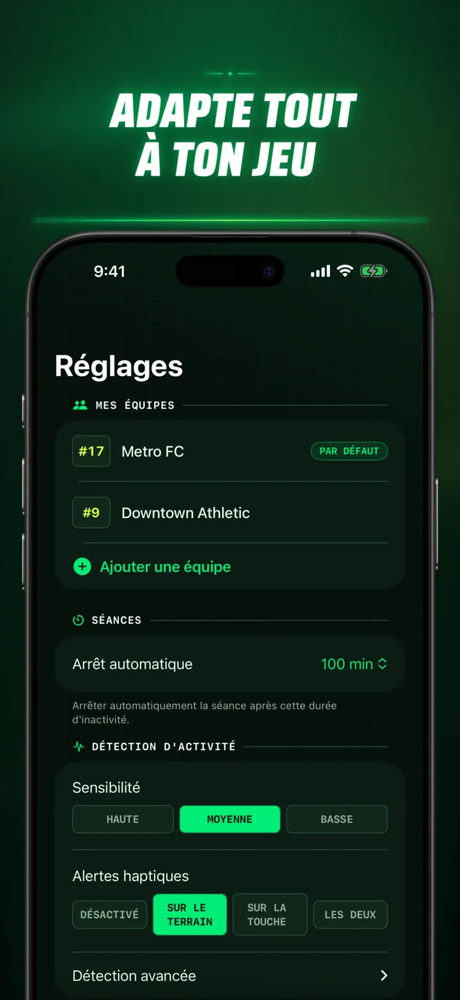
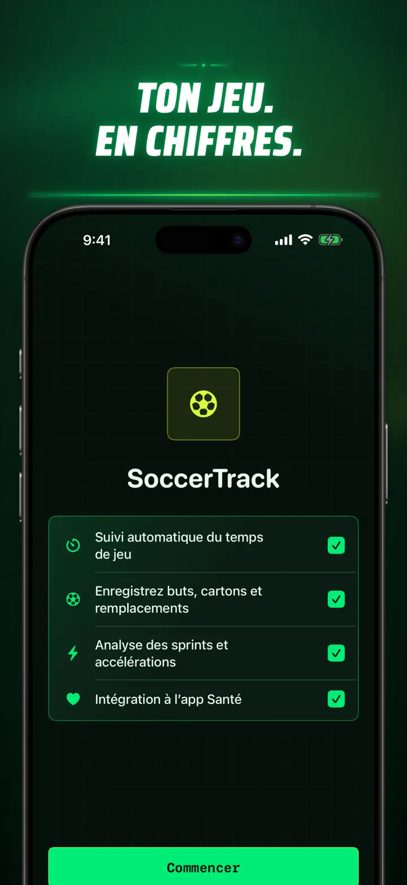

Soccer Time Track
Temps de jeu & analyse foot
Lancez une session et jouez. Apple Watch distingue automatiquement terrain et banc, puis mesure en direct sprints, actions de match, performances et tendances.
Télécharger dans l’App Store
À propos de l’app
Voyez votre match autrement.
Soccer Time Track transforme l’Apple Watch en assistant de match pour les joueurs qui veulent comprendre bien plus que le score final. Lancez la session au poignet, concentrez-vous sur le jeu, puis retrouvez sur l’iPhone une vue détaillée de votre performance.
TEMPS DE JEU AUTOMATIQUE
Sachez quand vous étiez vraiment dans l’action. Les signaux de mouvement, d’entraînement et de localisation aident à distinguer les phases de jeu, de faible activité et sur le banc. Vous obtenez :
- Le temps sur le terrain et sur le banc
- Vos séquences de jeu et une chronologie claire
- Le déroulé détaillé de toute la session
LE MATCH, DEPUIS VOTRE POIGNET
Choisissez Match, Entraînement, Amical ou Autre. Pendant la rencontre, notez :
- Les buts pour et contre
- Vos buts et passes décisives
- Les cartons jaunes et rouges
- Les remplacements et changements de période
VOTRE PERFORMANCE, MESURÉE
Allez au-delà des minutes avec notamment :
- La distance
- Les vitesses moyenne et maximale
- Les sprints et efforts à haute intensité
- La fréquence cardiaque et les calories actives
- La cadence et l’accélération
LES DONNÉES EN DIRECT, LE JEU AVANT TOUT
Un iPhone jumelé peut afficher les mesures en direct pendant que l’Apple Watch poursuit l’entraînement. Vous restez concentré sur le match, vos données se construisent en arrière-plan.
SUIVEZ VOS PROGRÈS
Regroupez matchs, entraînements, amicaux et autres sessions dans un même historique. Analysez tendances et records personnels, comparez vos performances et ajoutez équipe, numéro de maillot, adversaire, lieu et notes pour garder le contexte de chaque résultat.
Besoin de récupérer vos données ? Exportez sessions, séquences de jeu et événements au format CSV ou JSON.
CONÇU POUR APPLE WATCH ET APPLE HEALTH
Avec votre autorisation, Soccer Time Track utilise les données d’entraînement, de fréquence cardiaque, de mouvement et de localisation pour produire vos analyses et enregistrer vos séances de football terminées dans Apple Health. Le suivi automatique nécessite une Apple Watch. Vous pouvez aussi ajouter une session manuellement sur l’iPhone.
VOS DONNÉES, VOTRE MATCH
Vos sessions restent sur vos appareils et, si la synchronisation iCloud est activée, dans votre base iCloud privée. Soccer Time Track ne demande aucun compte, n’affiche aucune publicité et n’utilise aucun outil d’analyse tiers.
Ne devinez plus combien de temps vous avez joué. Découvrez ce que vous avez fait de chaque minute.
Politique de confidentialité : https://masawata.net/SoccerTimeTrack/privacy-policy.html Conditions d’utilisation : https://www.apple.com/legal/internet-services/itunes/dev/stdeula/
Captures d’écran









Soccer Time Track
Lancez une session et jouez. Apple Watch distingue automatiquement terrain et banc, puis mesure en direct sprints, actions de match, performances et tendances.
Télécharger dans l’App Store